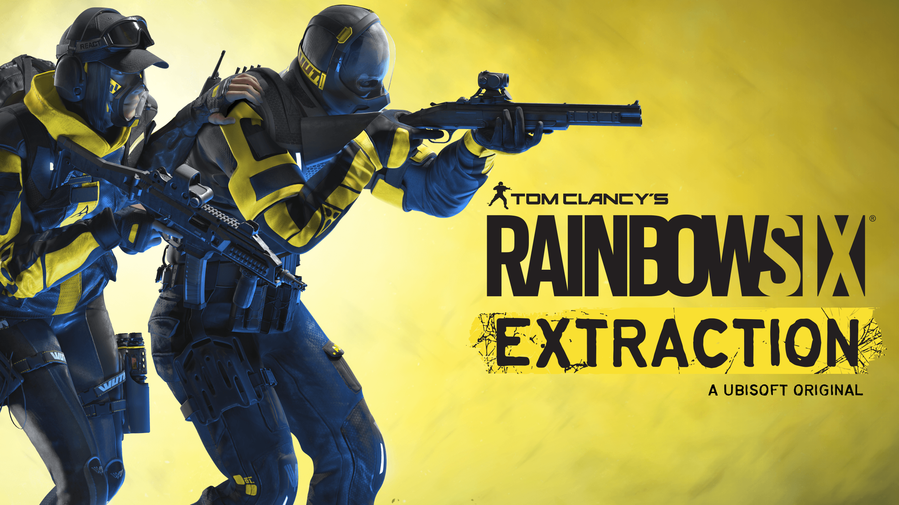

God of War, 14 Ocak 2022'de PC'ye geliyor 2018'in en büyük oyunu nihayet bilgisayarlarımıza teşrif ediyor. God of War'un neden herkesin dilinde olduğunu artık PC oyuncuları da öğrenebilecek. Hikâyesi ile fark yaratan serinin bu yeni serüveninde oyuncular, bu sefer oğluyla bir yolculuğa çıkan ve Olimpos tanrıları yerine, gözüne kestirdiği İskandinav mitolojisi tanrılarının ve canavarlarının peşine düşen Kratos olarak oynayacaklar.

Rainbow Six Extraction, 20 Ocak 2022'de PC'ye geliyor Teknolojik teçhizatlarla uluslararası ölçekte faaliyet gösteren Rainbow kod adlı bir terörle mücadele timi hakkındaki 90'ların Tom Clancy romanından yola çıkarak yapılan ilk Ubisoft oyunundan bu yana çok yol katettik. Rainbow Six romanlarının verdiği ilhamla bugüne kadar, çoğu zaman, gerçekliğe bağlı kalan taktiksel nişancı türünde oyunlardan oluşan güzel bir seri yaratılmıştı ancak artık durum değişti. Çünkü bir taktiksel eşli nişancı türü olan Rainbow Six Extraction'da oyuncular, Archaean'lar adlı bir parazit uzaylıyla savaşacaklar.
Strange Horticulture, 21 Ocak 2022'de PC'ye geliyor Eminim hayatında hiç böyle bir oyun duymamışsındır: Strange Horticulture'da yerel bir fideciyi işletecek ve bahçecilikle ilgili esrarengiz bilgilerinden faydalanarak hem topluluğa hizmet edecek hem de bölgede yaşanan olayları ve gizemleri çözeceksin. Az daha unutuyordum, aynı zamanda bir bulmaca oyunu. Strange Horticulture'ın cazibesinin yarısı özgün oyun tarzı, ortamı ve hikâyelerinden geliyor. Diğer yarısı da, şey, tabii ki cazibesinden. Oyunda kedini de sevebildiğinden bahsetmiş miydim?

Not for Broadcast, 25 Ocak 2022'de PC'ye geliyor Aslında, bu oyun 2020'den beri erken erişimde ama artık tüm hazırlıklar bitti ve eksiksiz ve resmî olarak piyasaya çıkmaya hazır. Not for Broadcast, baskıcı ve radikal bir hükûmet yönetimindeki 1980'ler Britanya'sının distopik alternatif dünyasında geçen bir haber yayını simülatörüdür (propaganda televizyonu simülatörü de denebilir). Görev gereği sürekli sansür uygulayıp araya reklamlar sıkıştırırken farklı kamera görüntülerini kesip birleştirerek bir canlı yayın yapman gerekiyor. Neredeyse her seferinde ortaya çok komik şeyler çıkıyor. Resmî 1.0 sürümü ile oyuna üçüncü ve final bölümü, 17 saatlik yeni TV içeriği, 17 yeni reklam, yeni hikâye sonları ve daha pek çok ufak tefek şey eklendi.

Dying Light 2 Stay Human, 4 Şubat 2022'de PC'ye geliyor 2015'te çıkan aksiyon-macera zombi hayatta kalma yapımının bu devam oyununda, oyuncular kendilerini orijinal Dying Light'tan 20 yıl sonrasında geçen bir açık dünyada bulacaklar. Zombiler hâlâ oyunun baş düşmanları olsa da, oyuncular devasa açık Şehir haritasındaki birçok grup ve yerleşke ile de mücadele etmek zorunda kalacaklar. İnsanlığın son yerleşkelerinden biri olan Şehir, yıkılmanın eşiğinde yaşam mücadelesi veriyor ve -tahmin edebileceğin üzere- dünyadan geriye kalanları kurtarmak sana kalmış durumda.